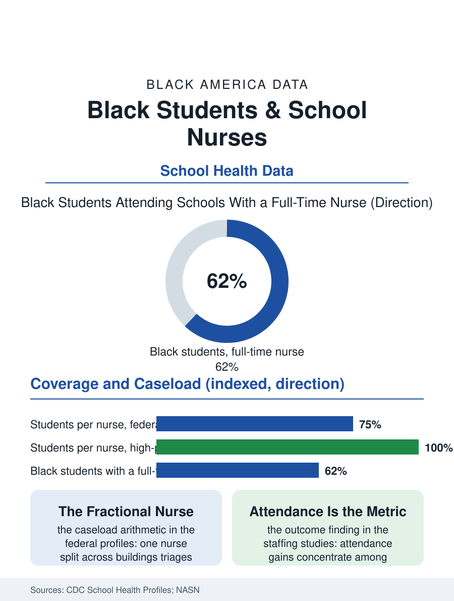

Black Education
The Health Room: School Nurses and Black Students
One nurse per 750 students is the federal recommendation; the schools Black children attend run far thinner, and the health room is their clinic of first resort. The school nurse file.

The school nurse is the only health professional most children will ever meet inside a school building, and in the districts where Black students concentrate, she is frequently a fractional person: one nurse for several buildings, a rotation across thousands of students, a health room that opens on a schedule. Federal recommendations call for one nurse per 750 students; the staffing data show the national reality running far thinner, and thinnest where asthma, diabetes, and injury rates run highest. This article reads the school nurse file.
The Clinic of First Resort
For children with insurance gaps, the health room is primary care: the place where the asthma action plan lives, where medication is administered at midday, where the vision screening catches what the pediatric visit calendar missed. The Centers for Disease Control and Prevention's school health profiles document what nurses actually do across a year, managing chronic conditions for a student population in which Black children carry elevated rates of asthma and diabetes, responding to injuries and mental health crises, screening vision and hearing, and tracking immunization compliance for entire buildings. The workload arithmetic is the file's foundation. A nurse assigned fifteen hundred students across three schools does not perform the same job as a nurse with five hundred in one building; she performs triage on the concept of school nursing itself, reducing it to emergencies and medication passes, and surrendering the prevention, screening, and family liaison work that the outcomes research credits with the measurable effects: attendance gains for chronically ill students, earlier identification of the conditions that become the adult health file's opening chapters, and parents connected to coverage and care through the one institution that sees their children every day.
The Funding Formula Problem
The shortage's cause is not a mystery of supply; it is a line in school finance. Nurses are typically paid from district operating funds, the same dollars that hire teachers, and when budgets tighten the health room competes against the classroom in a contest structured for the classroom to win. Wealthy districts resolve the contest by simply hiring, which is why nurse coverage maps onto district wealth with the fidelity this atlas has come to expect, while high-poverty districts lean on grants, county health departments, and school-based health centers to patch the coverage, producing a patchwork in which adjacent counties offer their Black students entirely different levels of in-school care. The pandemic years wrote the file's sharpest natural experiment: federal relief dollars hired thousands of school nurses at once, districts reported building real chronic-care systems for the first time, and when the relief expired the positions faced the same operating-budget contest they had briefly escaped. The policy proposals with traction treat nursing as infrastructure rather than enrichment: state staffing mandates with funding attached, Medicaid billing for school health services, which federal guidance has steadily widened, and pipeline partnerships between districts and nursing programs, whose students gain pediatric placements while schools gain staff, a trade the health workforce files endorse.
What a Full-Time Nurse Changes
The outcomes literature is unusually concrete for an education topic. Studies of schools adding full-time nurses find attendance improvements concentrated among students with chronic conditions, the children for whom a managed asthma plan is the difference between a school year and a series of interruptions; emergency department visits for school-managed conditions decline; and immunization and screening compliance rise toward the levels the affluent districts take for granted. For Black students the file's intersection is exact: the conditions cluster where the nurses do not. A nurse who knows the building also becomes a data source, the first to see the patterns, the mold in the portable classroom behind the asthma cluster, the lead exposure corridor behind the screening results, converting individual cases into environmental evidence the district must answer. The school nurse file closes on the recommendation-versus-reality table the federal profiles publish: a standard written for a country that staffs its poorest schools thinnest. Every other file in this atlas describes Black children encountering a system in fragments. The health room, when it exists full-time, is the rare fragment that works whole: clinician, case manager, screening program, and family bridge, behind one door with a paper sign, open all day.
More in Black Education
Black Educational Attainment: High School Parity, the College Gap
About 89 percent of Black adults hold a high school diploma and one in four holds a bachelor's degree or higher — the attainment ladder, the college completion gap, and the generational trend.
Historically Black Colleges and Universities: Enrollment and Degrees
More than 100 HBCUs enroll roughly 290,000 students and award about one in six Black bachelor's degrees — an outsized share from a small sector. The federal education data.
Black College Enrollment: 2.4 Million Students
About 2.4 million Black students are enrolled in American colleges — nearly two-thirds of them women. The NCES enrollment data by sector, level, and trend.
Source: Centers for Disease Control and Prevention, School Health Profiles; National Association of School Nurses staffing data; National Center for Education Statistics.